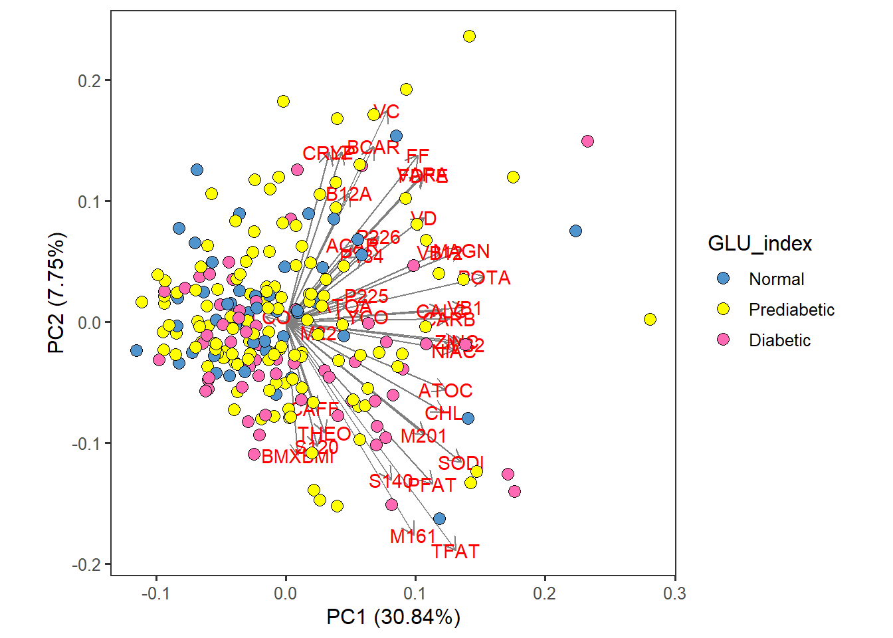
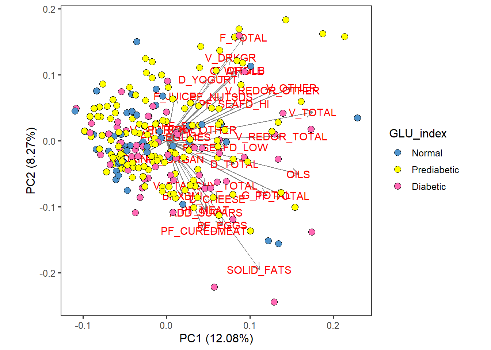

In this script, we will perform Principal Component Analysis (PCA) with the NHANES 2-day average totals, subsetted for males, 60-79 years old.
Name the path to DietDiveR directory where input files are pulled.
main_wd <- "~/GitHub/DietDiveR"Load necessary packages.
library(ggplot2)
library(ggfortify)Load the necessary functions.
source("lib/specify_data_dir.R")
source("lib/ggplot2themes.R")
source("lib/PCA.R")You can come back to the main directory by:
setwd(main_wd)Specify the directory where the data is.
SpecifyDataDirectory(directory.name = "eg_data/NHANES/Laboratory_data/")Create two folders named “males60to79_Nut_PCA” and “males60to79_Cat_PCA” inside “Laboratory_data” to save PCA results of Nutrients and Food Category data, respectively.
Your input data should be a dataframe with uncorrelated variables with non-zero variance and with no missing data.
pca_input <- read.table("QCtotal_d_ga_body_meta_glu_comp_2_males60to79_c_Nut_rv.txt",
sep="\t", header=T)Ensure your input file has the correct number of rows and columns.
dim(pca_input)## [1] 233 38colnames(pca_input)## [1] "BMXBMI" "SODI" "CARB" "FF" "TFAT" "PFAT" "CHL" "ATOC"
## [9] "ATOA" "VARA" "ACAR" "BCAR" "CRYP" "LYCO" "LZ" "VB1"
## [17] "VB2" "NIAC" "FDFE" "VB12" "B12A" "VC" "VD" "CALC"
## [25] "POTA" "MAGN" "ZINC" "CAFF" "THEO" "ALCO" "S140" "S120"
## [33] "M161" "M201" "M221" "P184" "P226" "P225"Perform PCA with the subset data, scaled.
scaled_pca <- prcomp(x= pca_input, scale= TRUE) Specify the directory (folder that you created in “Laboratory_data”) to save the results.
res_dir_Nut = "males60to79_Nut_PCA" Specify the prefix of filenames to be saved.
res_prefix_Nut = "males60to79_Nut_fn"Save PCA output files in a specified folder (out.dir) and a prefix (out.prefix).
OutputPCA(pca.data= pca_input, pca.result= scaled_pca,
out.dir= res_dir_Nut, out.prefix= res_prefix_Nut)As we saw in the PCA with ASA24 data, this code will generate several output files all at once in the res_dir: res_prefix_Nut.
| Output file postfix | File content |
|---|---|
| _biplotdots.pdf PCA | biplot with the datapoints as dots and with the variables shown as arrows |
| _biplotlabeled.pdf | PCA biplot with the datapoints labed with numbers and with the variables shown as arrows |
| _biplotlabeledwoarrows.pdf | The datapoints labed with numbers; variables are hidden |
| _directions.pdf | Variables shown as arrows only; the datapoints are hidden |
| _loadings_PC1.pdf | Loadings of PC1 shown as a bar chart. |
| _loadings_PC2.pdf | Loadings of PC2 shown as a bar chart. |
| _PC_loadings.txt | Text file with loadings of each PC for the variables. |
| _PC_var_explained.txt | Amount of variation explained by each PC |
| _PCs.txt | The input file (totals/items) and the PCA results combined |
| _scree.pdf | PCA scree plot, showing the amount of variance explained by each PC. |
Combine the input with all the variables and the PC results.
“input” is your items/totals input file with no missing data in your variables, but including the ones that are highly correlated and therefore were removed when processed into clustering input; however, these variables are going to be included here so that we will be able to take a look at all the variables and see which of them are correlated with the PCA axes and metadata etc.
SaveInputAndPCs(input="QCtotal_d_ga_body_meta_glu_comp_2_males60to79_c_Nut.txt",
pca.results = scaled_pca,
out.dir= res_dir_Nut, out.prefix= res_prefix_Nut)[NOTE] Even though the input file has both nutrients (Nut) and food categories (Cat) data, PCA was done with only either Nut or Cat, not both.
Load the totals_males60to79 data with no missing data in your variables of interest.
totals_males60to79 <- read.table("QCtotal_d_ga_body_meta_glu_comp_2_males60to79_c_Nut.txt",
sep="\t", header=T)Change GLU_index to a factor so that factors will be displayed in order.
totals_males60to79$GLU_index <- factor(totals_males60to79$GLU_index,
levels= c("Normal", "Prediabetic", "Diabetic"))Use the autoplot function. Specify which PC to display in the x and y arguments.
food_Nut_PCA <- autoplot(scaled_pca, x=1, y=2,
loadings=T, loadings.label=T, loadings.colour = 'grey50', # loadings.label=T if want to see it
data = totals_males60to79, size= 3 ) +
geom_point(size = 3, alpha = 1, na.rm = T, shape = 21, aes(fill= GLU_index)) +
theme_bw(base_size = 12) + theme(aspect.ratio = 1) +
theme( panel.grid.major = element_blank(), panel.grid.minor = element_blank()) +
scale_fill_manual( values= c("steelblue3", "yellow", "hotpink")) food_Nut_PCA
Save as a .pdf.
ggsave("males60to79_Nut_PCA/males60to79_c_Nut_PCA_by_GLU_index_PC12.pdf",
food_Nut_PCA, device="pdf", width=7, height=6.5)Your input data should be a dataframe with uncorrelated variables with non-zero variance and with no missing data.
pca_input <- read.table("QCtotal_d_ga_body_meta_glu_comp_2_males60to79_c_Cat_rv.txt",
sep="\t", header=T)Ensure your input file has the correct number of rows and columns.
dim(pca_input)## [1] 233 31Perform PCA with the subset data, scaled.
scaled_pca <- prcomp(x= pca_input, scale= TRUE) Specify the directory (folder that you created in “Laboratory_data”) to save the results.
res_dir_Cat = "males60to79_Cat_PCA" Specify the prefix of filenames to be saved.
res_prefix_Cat = "males60to79_Cat"Save PCA output files in a specified folder (out.dir) and a prefix (out.prefix).
OutputPCA(pca.data=pca_input, pca.result=scaled_pca,
out.dir= res_dir_Cat, out.prefix= res_prefix_Cat)Combine the input with all the variables and the PC results.
SaveInputAndPCs(input="QCtotal_d_ga_body_meta_glu_comp_2_males60to79_c_Cat.txt",
pca.results = scaled_pca,
out.dir= res_dir_Cat, out.prefix= res_prefix_Cat)[NOTE] Even though the input file has both nutrients (Nut) and food categories (Cat) data, PCA was done with only either Nut or Cat, not both.
Load the totals_males60to79 data with no missing data in your variables of interest.
totals_males60to79 <- read.table("QCtotal_d_ga_body_meta_glu_comp_2_males60to79_c_Cat.txt",
sep="\t", header=T)Change GLU_index to a factor so that factors will be displayed in order.
totals_males60to79$GLU_index <- factor(totals_males60to79$GLU_index,
levels= c("Normal", "Prediabetic", "Diabetic")) Use the autoplot function. Specify which PC to display in the x and y arguments.
The ‘data’ argument needs the original input for PCA, not after selecting uncorrelated variables.
food_Cat_PCA <- autoplot(scaled_pca, x=1, y=2,
loadings=T, loadings.label=T, loadings.colour = 'grey50', # loadings.label=T if want to see it
data = totals_males60to79, size= 3 ) +
geom_point(size = 3, alpha = 1, na.rm = T, shape = 21, aes(fill= GLU_index)) +
theme_bw(base_size = 12) + theme(aspect.ratio = 1) +
theme( panel.grid.major = element_blank(), panel.grid.minor = element_blank()) +
scale_fill_manual( values= c("steelblue3", "yellow", "hotpink")) food_Cat_PCA
ggsave("males60to79_Cat_PCA/males60to79_c_Cat_PCA_by_GLU_index_PC12.pdf",
food_Cat_PCA, device="pdf", width=7, height=6.5)Come back to the main directory.
setwd(main_wd)